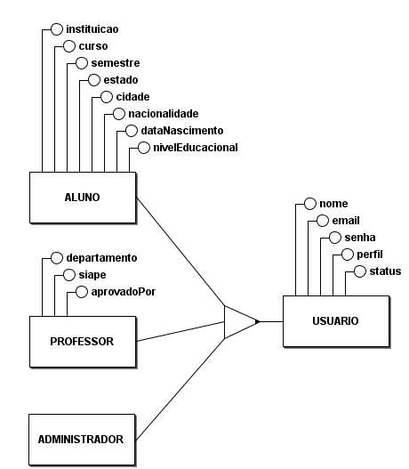
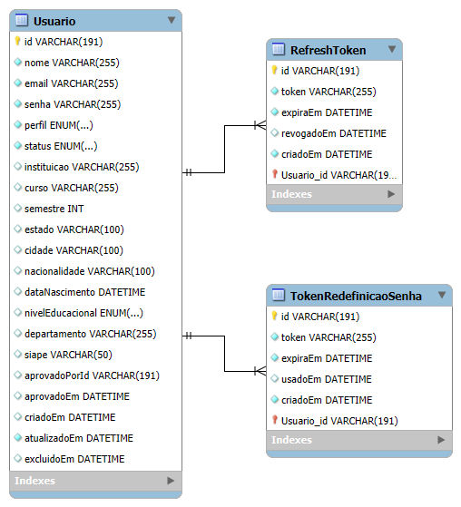

Banco de Dados
Objetivo
O modelo inicial do banco de dados foi elaborado com foco no módulo de autenticação e gestão de usuários da plataforma AnatoQuizUp.
Nesta primeira versão, o banco contempla:
- usuários;
- especialização de usuários em aluno, professor e administrador;
- refresh tokens;
- tokens de redefinição de senha;
- perfis de acesso;
- status de aprovação;
- dados complementares para alunos e professores.
Esta documentação representa a versão 1 da modelagem do banco de dados. O processo seguido foi:
- elaboração do modelo conceitual;
- elaboração do modelo lógico;
- implementação do schema no Prisma.
O schema Prisma foi construído a partir dos modelos apresentados abaixo.
Modelo Conceitual
O modelo conceitual apresenta as entidades principais do domínio e seus relacionamentos, sem foco em detalhes físicos de implementação.
Neste modelo, a entidade central é Usuario, que representa qualquer pessoa cadastrada na plataforma. A partir dela, foi aplicada uma generalização/especialização para representar os três tipos de usuário existentes no sistema:
Aluno;Professor;Administrador.

Generalização e Especialização
A entidade Usuario concentra os atributos comuns a todos os perfis:
| Atributo | Descrição |
|---|---|
nome |
Nome do usuário |
email |
E-mail usado para autenticação |
senha |
Senha do usuário |
perfil |
Perfil do usuário no sistema |
status |
Situação do usuário na plataforma |
A entidade Aluno especializa Usuario e possui os seguintes atributos específicos:
| Atributo |
|---|
instituicao |
curso |
semestre |
estado |
cidade |
nacionalidade |
dataNascimento |
nivelEducacional |
A entidade Professor especializa Usuario e possui os seguintes atributos específicos:
| Atributo |
|---|
departamento |
siape |
A entidade Administrador também especializa Usuario, mas não possui atributos específicos nesta primeira versão do modelo.
Aprovação de usuários
O modelo conceitual também representa a relação de aprovação entre Administrador e Professor.
Um administrador pode aprovar nenhum ou vários professores. Cada professor aprovado está associado a um administrador responsável pela aprovação.
No schema Prisma atual, essa informação aparece por meio dos campos:
| Campo | Descrição |
|---|---|
aprovadoPorId |
Identificador de quem realizou a aprovação |
aprovadoEm |
Data e hora da aprovação |
Modelo Lógico
O modelo lógico detalha a estrutura das tabelas, seus atributos, tipos de dados, chaves primárias, chaves únicas e relacionamentos.

Na implementação lógica, a generalização/especialização do modelo conceitual foi representada em uma única tabela chamada Usuario.
Essa decisão segue o schema Prisma atual, no qual os diferentes tipos de usuário são controlados pelo campo perfil.
Tabela Usuario
Representa os usuários cadastrados na plataforma.
| Campo | Tipo | Restrição |
|---|---|---|
id |
VARCHAR(191) |
PK |
nome |
VARCHAR(255) |
Obrigatório |
email |
VARCHAR(255) |
Único |
senha |
VARCHAR(255) |
Obrigatório |
perfil |
ENUM |
Obrigatório |
status |
ENUM |
Obrigatório |
instituicao |
VARCHAR(255) |
Opcional |
curso |
VARCHAR(255) |
Opcional |
semestre |
INT |
Opcional |
estado |
VARCHAR(100) |
Opcional |
cidade |
VARCHAR(100) |
Opcional |
nacionalidade |
VARCHAR(100) |
Opcional |
dataNascimento |
DATETIME |
Opcional |
nivelEducacional |
ENUM |
Opcional |
departamento |
VARCHAR(255) |
Opcional |
siape |
VARCHAR(50) |
Único |
aprovadoPorId |
VARCHAR(191) |
Opcional |
aprovadoEm |
DATETIME |
Opcional |
criadoEm |
DATETIME |
Obrigatório |
atualizadoEm |
DATETIME |
Obrigatório |
excluidoEm |
DATETIME |
Opcional |
Tabela RefreshToken
Representa os tokens usados para renovação de sessão.
| Campo | Tipo | Restrição |
|---|---|---|
id |
VARCHAR(191) |
PK |
token |
VARCHAR(255) |
Único |
expiraEm |
DATETIME |
Obrigatório |
revogadoEm |
DATETIME |
Opcional |
criadoEm |
DATETIME |
Obrigatório |
Usuario_id |
VARCHAR(191) |
FK |
Relacionamento
Usuario 1:N RefreshToken
Tabela TokenRedefinicaoSenha
Representa os tokens temporários usados no fluxo de recuperação de senha.
| Campo | Tipo | Restrição |
|---|---|---|
id |
VARCHAR(191) |
PK |
token |
VARCHAR(255) |
Único |
expiraEm |
DATETIME |
Obrigatório |
usadoEm |
DATETIME |
Opcional |
criadoEm |
DATETIME |
Obrigatório |
Usuario_id |
VARCHAR(191) |
FK |
Relacionamento
Usuario 1:N TokenRedefinicaoSenha
Um usuário pode possuir vários tokens de redefinição de senha. Cada token pertence a um único usuário.
Enums
PerfilUsuario
Define o tipo de usuário na plataforma.
| Valor | Descrição |
|---|---|
ALUNO |
Usuário estudante |
PROFESSOR |
Usuário professor |
ADMIN |
Usuário administrador |
StatusUsuario
Define a situação da conta do usuário.
| Valor | Descrição |
|---|---|
PENDENTE |
Cadastro aguardando aprovação |
ATIVO |
Conta ativa |
INATIVO |
Conta desativada |
RECUSADO |
Cadastro recusado |
NivelEducacional
Define o nível de formação informado pelo usuário.
| Valor |
|---|
ENSINO_MEDIO |
GRADUACAO |
POS_GRADUACAO |
MESTRADO |
DOUTORADO |
OUTRO |
Referências
BRMODELO. Ferramenta utilizada para a modelagem conceitual (DER) do sistema.
MYSQL WORKBENCH. Ferramenta utilizada para a modelagem lógica e definição das tabelas e relacionamentos.
PRISMA. Prisma ORM Documentation. Disponível em: https://www.prisma.io/docs. Acesso em: 25 abr. 2026.
Histórico de Versão
| Data | Versão | Descrição | Autor(es) |
|---|---|---|---|
| 25/04/2026 | 1.0 | Criação do documento de arquitetura | Breno Fernandes |